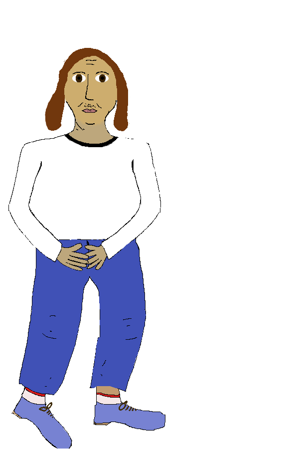

Advanced Vladimír poker

Poke count: 0
Essentials
Why exactly is it, that Vladimír is a Shashque, you might be wondering...
Well, let me tell
you...
Vladimír is annoying, selfconcerned, ignorant and worst of all without evidence judging
being.
Vladimír likes to criticize others. When someone criticizes him, he can't take it.
Vladimír pretends that he knows what he's doing even when he doesn't have a clue. When he fails, he
says
it was your fault.
Vladimír knows everything (Brouk Pytlík 2.0).
Vladimír thinks too high and mighty about himself, gets angry when you bring him back to reality.
Vladimír says those incredibly annoying sarcastic answers after your reasonable points or questions.
Vladimír keeps complaining about his life, although he has no life...
Vladimír is a drama queen, he is a snitch and no secret is sacred to him.
Vladimír is popular and his word is taken seriously, even though it doesn't deserve to be.
When Vladimír sees that you have bought something for your hard earned money, he gets so jealous
that he
goes to his mother and cries and beggs until he gets what he wanted.
Vladimír sounds like a girl.
His bare existance makes me sick,
He has a tiny penis...
Otherwise, he's fine...
Vladimírboard
Today's poem:
Roses are red,
Violets are blue,
I don't know how to rhyme
and neither does Vladimír...